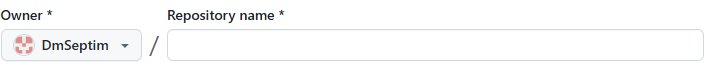
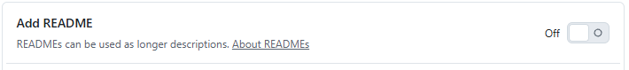

Как создать аккаунт на github и репозиторий
- Перейдите по ссылке
- Выберите пункт: Sign up
-
Имеется 2 способа регистрации:
- через электронную почту
- заполнить форму на сайте
- Открыть навигационное меню в верхнем правом углу
- Выбрать repositories
- В открывшемся окне нажать на зеленую кнопку new
- В открывшемся окне пишем название репозитория

- Добавляем в разделе "Configuration" Add README переключением тумблера

- Создаем репозиторий нажатием кнопки "Create repository"